01មូសិកទន្ត · The sign ់មូសិកទន្ត
«់» នៅពីលើអក្សរចុងព្យាង្គ សម្លាប់សំឡេងស្រៈ ដូចជា «កង់»។
The sign ់ sits on the last letter and kills its vowel: កង់.
Closed syllables with the killer sign ់ · មេរៀនទី ៤ · Lesson 4 of ភាសាខ្មែរ កម្រិត ១
«់» (មូសិកទន្ត) សម្លាប់សំឡេងស្រៈចុងព្យាង្គ។ «កង់» អាន kɑŋ ដូច «កង» ប៉ុន្តែមានរូបតួបន្ថែម។
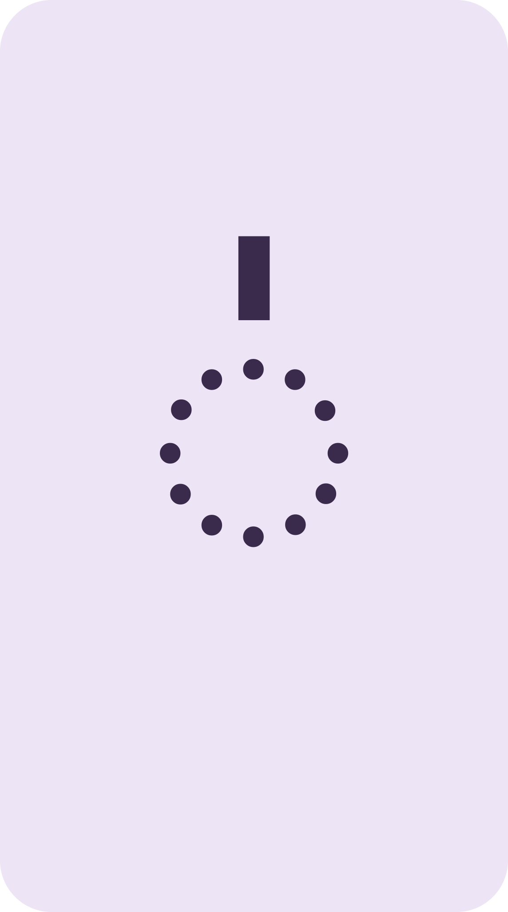
សញ្ញាសម្លាប់ស្រៈThe sign kills the final vowel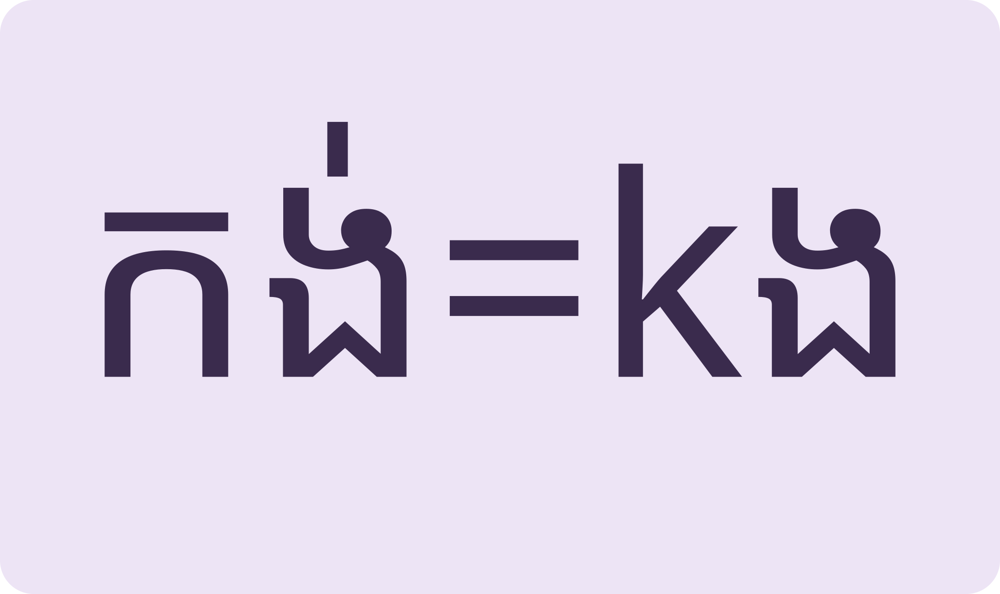
សំឡេងដូច រូបខុសSame sound, different spelling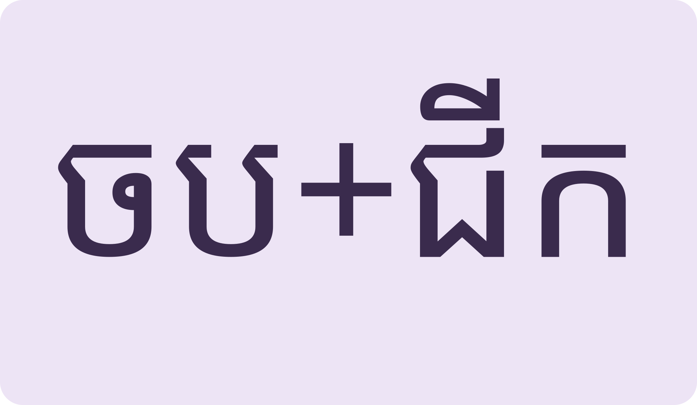
ពាក្យពីរបញ្ចូលគ្នាTwo words glue into one thingLearn the killer sign, read closed words, glue compounds together, then read Phally's plan.
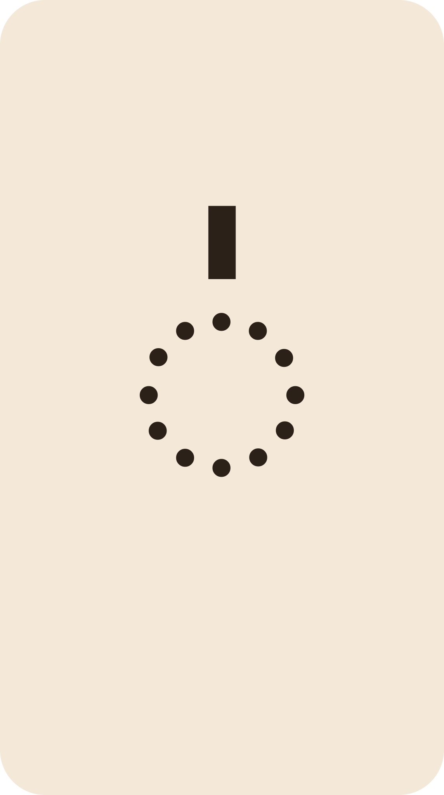
Space listen · ← → move · K show text
«់» នៅពីលើអក្សរចុងព្យាង្គ សម្លាប់សំឡេងស្រៈ ដូចជា «កង់»។
The sign ់ sits on the last letter and kills its vowel: កង់.
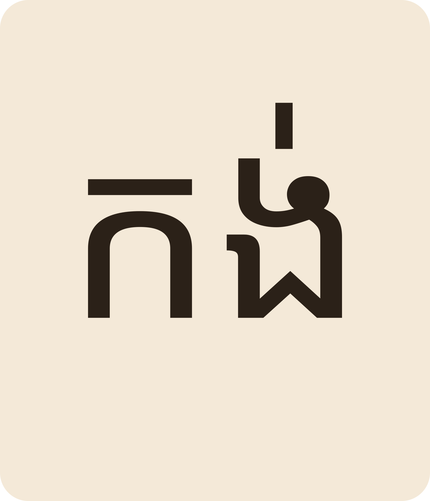
«កង់» មានន័យថា wheel ឬ bicycle។ «ពូតង់លក់កង់ចាស់»។
កង់ means wheel or bicycle: “Pu Tong sells old bicycles”.
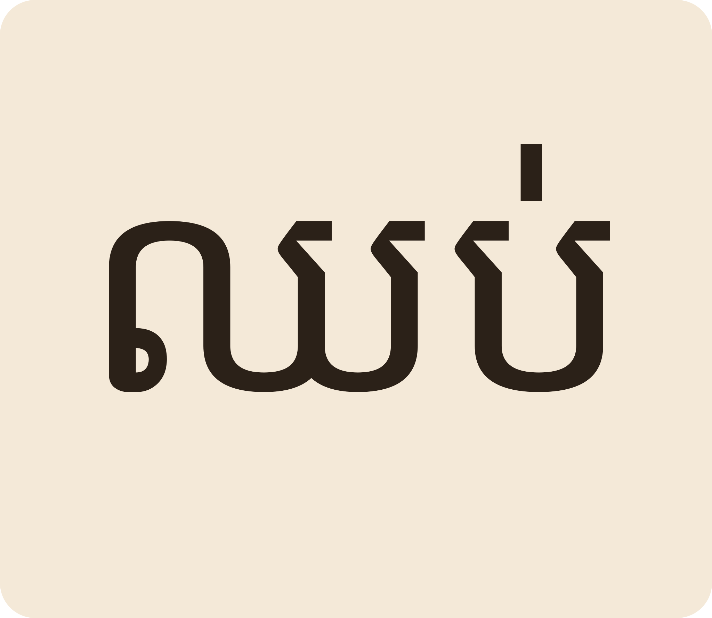
«ឈប់» to stop។ «តាបាស់ឈរជក់បារី»។
ឈប់ “to stop”. Ta Bas stands smoking a cigarette.
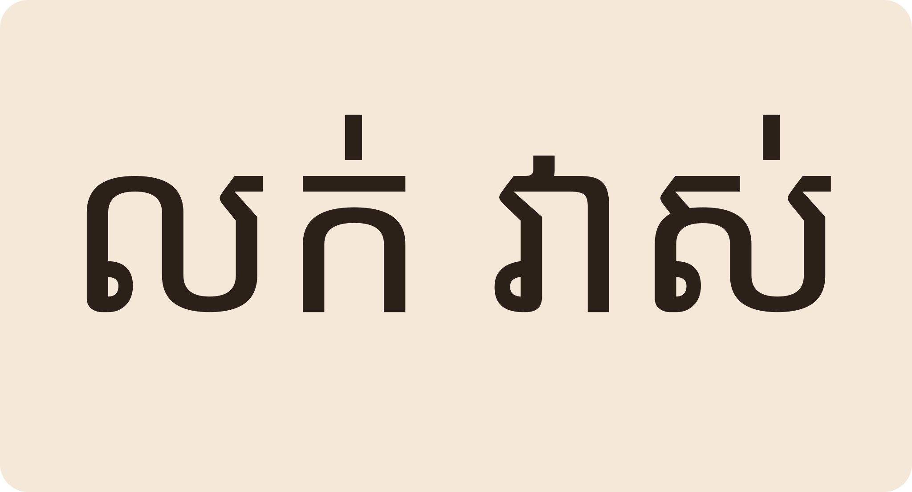
«លក់» to sell «វាស់» to measure។ «ពូតក់វាស់ដីលក់ដោយបង់រំលស់»។
លក់ sell, វាស់ measure: “Pu Tok measures land and sells it on instalments”.
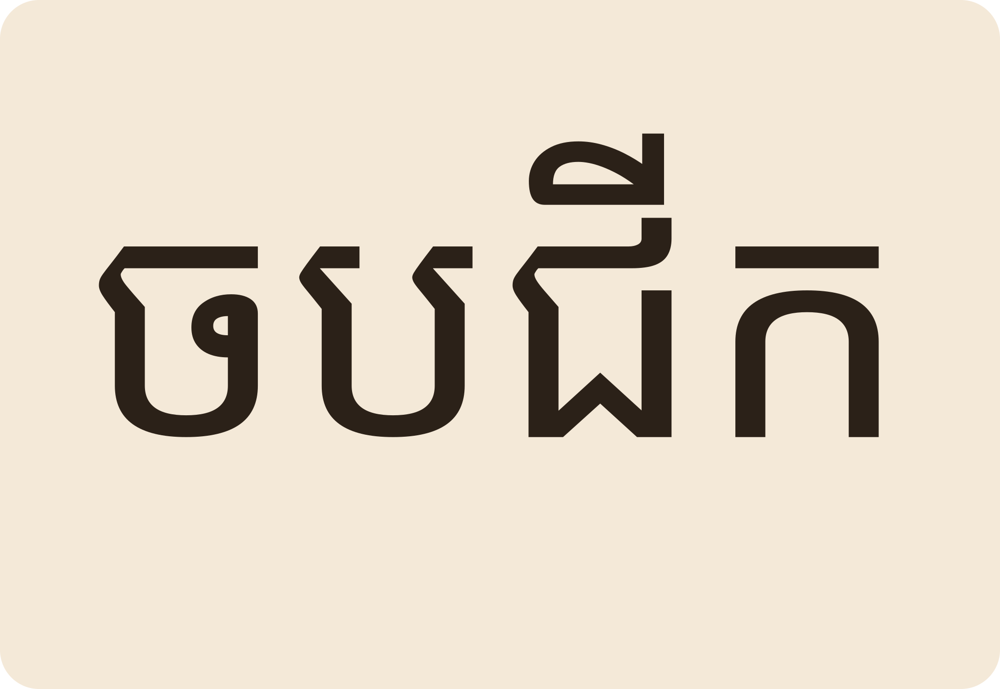
«ចប» + «ជីក» = ចបជីក a digging spade។ ពាក្យពីរបញ្ចូលគ្នាជាអង្គធាតុមួយ។
ចប (spade) + ជីក (dig) = ចបជីក, one tool made of two words.
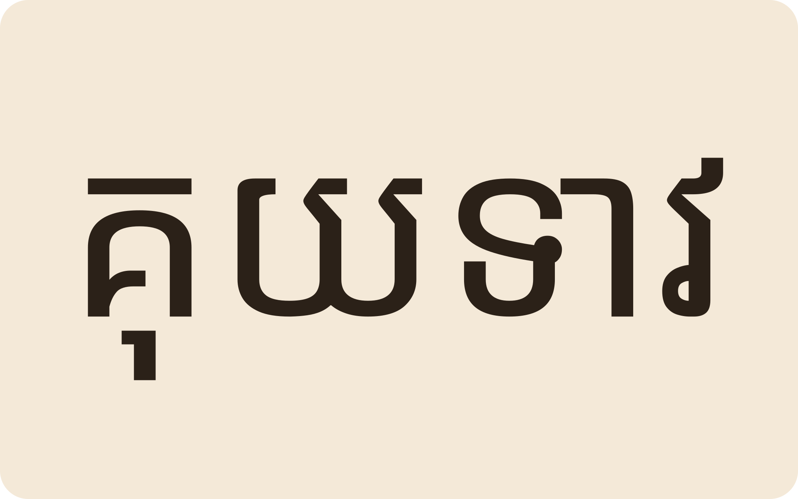
«គុយទាវ» rice noodle soup។ «នគរបាលចាប់ចងចោរលួចឡាននៅហាងគុយទាវ»។
គុយទាវ is noodle soup. “Police arrested the car thief at a noodle shop.”
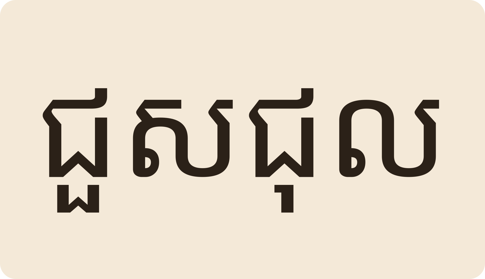
«ជួសជុល» to repair។ សំណាងជាជាងជួសជុលកង់។
ជួសជុល “to repair”. Somnang is a bicycle repairman.
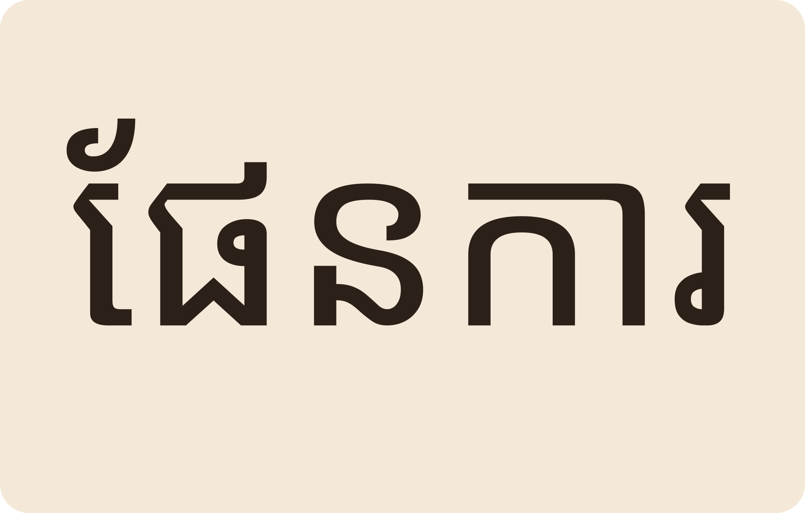
ផល្លីរៀនចប់អក្ខរកម្ម ហើយមានផែនការរៀនបន្តយកជំនាញដាំបន្លែ។
Phally finished literacy class and plans to study vegetable-growing skills.
«កង» សរសេរបាន ប៉ុន្តែពាក្យភាគច្រើនត្រូវការ «់» តាមប្រវត្តិពាក្យ។ ត្រូវចាំជាពាក្យៗ។
Both can be spelled, but each word has its own traditional form — learn word by word.
កង់ wheel ត្រូវ «់» រីឯ កង in កងទ័ព សរសេរគ្មាន។
ទេ។ «រី» បញ្ចប់ដោយស្រៈ ី មិនចាំបាច់សម្លាប់ស្រៈទេ។
No — the syllable already ends in the vowel ី, nothing to kill.
«ពស់» snake។ «បងសាញ់សាក់រូបពស់នៅលើដៃ»។
Snake. “Sanh tattoos a snake on his arm.”
ការបង់លុយជាដំណាក់កាលៗ មិនទិញមួយដងអស់ទេ។
Paying in instalments instead of all at once.
«ខ្ញុំកំពុងរៀនជំនាញដាំបន្លែ»។
“I am studying vegetable-growing skills.”
Tap a word's play button to hear it. Hide one side, then recall it before you tap to check.
«់» នៅពីលើអក្សរចុងព្យាង្គ សម្លាប់សំឡេងស្រៈ ដូចជា «កង់»។ «កង់» មានន័យថា wheel ឬ bicycle។ «ពូតង់លក់កង់ចាស់»។ «ឈប់» to stop។ «តាបាស់ឈរជក់បារី»។ «លក់» to sell «វាស់» to measure។ «ពូតក់វាស់ដីលក់ដោយបង់រំលស់»។
The sign ់ sits on the last letter and kills its vowel: កង់. កង់ means wheel or bicycle: “Pu Tong sells old bicycles”. ឈប់ “to stop”. Ta Bas stands smoking a cigarette. លក់ sell, វាស់ measure: “Pu Tok measures land and sells it on instalments”.
«ចប» + «ជីក» = ចបជីក a digging spade។ ពាក្យពីរបញ្ចូលគ្នាជាអង្គធាតុមួយ។ «គុយទាវ» rice noodle soup។ «នគរបាលចាប់ចងចោរលួចឡាននៅហាងគុយទាវ»។ «ជួសជុល» to repair។ សំណាងជាជាងជួសជុលកង់។
ចប (spade) + ជីក (dig) = ចបជីក, one tool made of two words. គុយទាវ is noodle soup. “Police arrested the car thief at a noodle shop.” ជួសជុល “to repair”. Somnang is a bicycle repairman.
ផល្លីរៀនចប់អក្ខរកម្ម ហើយមានផែនការរៀនបន្តយកជំនាញដាំបន្លែ។
Phally finished literacy class and plans to study vegetable-growing skills.
Q. «កង» និង «កង់» សំឡេងដូចគ្នា ហេតុអ្វីសរសេរខុស?
Q. Same sound — why two spellings?
A. «កង» សរសេរបាន ប៉ុន្តែពាក្យភាគច្រើនត្រូវការ «់» តាមប្រវត្តិពាក្យ។ ត្រូវចាំជាពាក្យៗ។
A. Both can be spelled, but each word has its own traditional form — learn word by word.
Q. «បារី» មាន «់» ដែរទេ?
Q. Does បារី take a ់?
A. ទេ។ «រី» បញ្ចប់ដោយស្រៈ ី មិនចាំបាច់សម្លាប់ស្រៈទេ។
A. No — the syllable already ends in the vowel ី, nothing to kill.
Q. «ពស់» មានន័យអ្វី?
Q. What does ពស់ mean?
A. «ពស់» snake។ «បងសាញ់សាក់រូបពស់នៅលើដៃ»។
A. Snake. “Sanh tattoos a snake on his arm.”
Q. «បង់រំលស់» ន័យដូចម្តេច?
Q. What is បង់រំលស់?
A. ការបង់លុយជាដំណាក់កាលៗ មិនទិញមួយដងអស់ទេ។
A. Paying in instalments instead of all at once.
Q. «ជំនាញ» ប្រើក្នុងឃ្លាដូចម្តេច?
Q. How do I use ជំនាញ in a sentence?
A. «ខ្ញុំកំពុងរៀនជំនាញដាំបន្លែ»។
A. “I am studying vegetable-growing skills.”
តើលក់អ្វីខ្លះ?
What do you sell?
ជួយវាស់ឱ្យខ្ញុំផង។
Please measure this for me.
Say it in your head first, then tap the box to check.